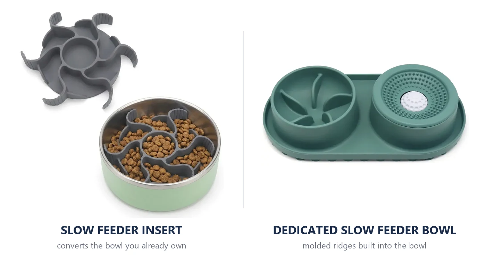
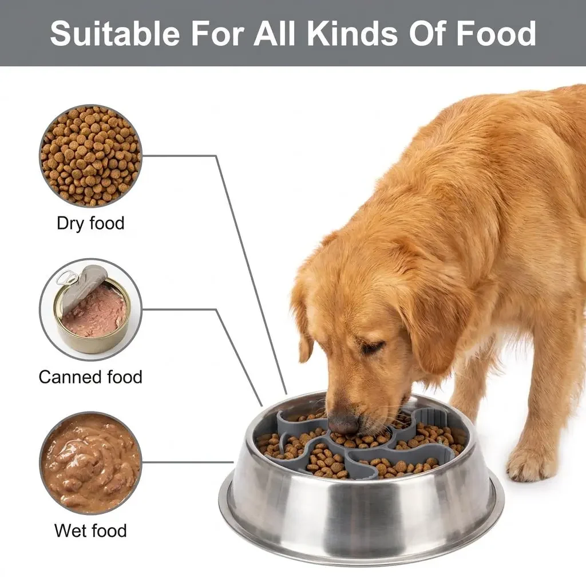

Most slow feeder enquiries we get start the same way: the buyer has decided the category is worth listing, and then asks which product to start with — a silicone slow feeder insert that drops into a bowl the customer already owns, or a dedicated slow feeder bowl with the ridges molded into the bowl body. They are not really competing products. They sell into different moments, at different price points, and they carry different fitment and freight risks. This guide lays out the trade-offs we see across wholesale, private label and Amazon FBA orders.
Two Products, One Job
Both products do the same mechanical thing: they put obstacles between the dog and the food, so the dog has to work around ridges or into cells instead of swallowing a bowl of kibble in forty seconds. Slower intake is the whole point — rapid eating is linked to bloating, vomiting and, in deep-chested breeds, gastric dilatation-volvulus. The American Kennel Club lists slow feeding as one of the basic preventive measures for at-risk dogs.
So the difference is not function. It is where the obstacle lives: on a separate silicone part, or in the bowl itself.

What a Slow Feeder Insert Actually Is
An insert is a flexible silicone disc with a raised maze on top and a cut-to-fit rim around the edge. It sits inside an existing stainless steel or ceramic bowl; the owner trims the rim with scissors until the insert drops in and stays put. The bowl supplies the weight, the depth and the anti-slip base — the insert only supplies the obstacle pattern.
Our paw-shaped silicone slow feeder insert is built this way: Ø175 mm and Ø160 mm sizes, a maze of raised ridges in a paw pattern, six stock colors, and a matching four-cavity frozen treat mold that turns wet food or broth into a frozen insert. It is sold as a standalone insert, as a mold set, or as a pair.
The commercial consequence is simple: an insert is an accessory. It is bought by someone who already has a bowl, which makes it cheap to try and easy to bundle, but it also means the buyer has to match it to a bowl.
What a Dedicated Slow Feeder Bowl Is
A dedicated bowl has the ridges, channels or maze molded into the bowl wall and floor. Nothing has to be measured or trimmed — the geometry is fixed at the factory, so the eating pattern is predictable for a given size.
The range splits into a few shapes. The 2-in-1 slow feeder bowl and lick tray (342 × 177 × 68 mm) pairs a maze bowl with a suction-base lick tray and an anti-spill surround. The spiral slow feeder bowl adds a cooling cavity for frozen treats. The foldable slow feeder bowl folds down to roughly 17 × 15.5 cm at 385 g for travel and camping.
This is a hero SKU. It carries the brand on the shelf, sets the price point, and cannot be compared line-by-line with a competitor's accessory — which is exactly why most established brands lead with bowls and add inserts later.

The Four Differences That Decide the Order
1. Fitment risk
An insert has to match a bowl. Inner diameter, rim profile and depth all matter, and a customer who measures wrong will return it. The cut-to-fit rim absorbs most of that risk, but not all of it: a very deep bowl leaves the insert sitting below the food line, and a very shallow one lets a determined dog flip it out.
A dedicated bowl has no fitment risk at all. It is the single strongest argument for bowls with retailers, because customer service tickets about "doesn't fit my bowl" simply do not exist.
2. Freight and storage cube
Inserts stack flat and pack light. Per unit they take a fraction of the carton volume of a bowl, which lowers freight per unit and lowers Amazon FBA fees at the same retail price. For a first test order shipped by air, that difference is usually the deciding factor.
Bowls are bulky. Carton cube per unit is several times higher, pallet counts are lower, and freight has to be priced into the landed cost from day one. In exchange, the bowl carries a higher unit price, so the freight is a smaller share of revenue.
3. Where it sits on the price ladder
Inserts land in the accessory band. They are an easy add-on at checkout, a natural upsell for anyone buying a bowl, and a low-commitment first purchase for a new customer. Bowls sit one tier up and anchor the category; a bowl plus an insert plus a treat mold is a natural three-item bundle with a higher average order value than any single item.
4. Branding surface
An insert gives you a logo on a small raised area, plus color. A bowl gives you the whole body: shape, color, embossed logo, pattern depth, packaging. If the goal is a private label range that looks like a designed product family rather than a catalog item, the bowl is the piece that carries it — see our OEM/ODM options for what can be tooled.
| Factor | Slow feeder insert | Dedicated slow feeder bowl |
|---|---|---|
| Works with | Any bowl of matching diameter | Stands alone |
| Fitment risk | Yes — measure the bowl | None |
| Freight cube per unit | Low — stacks flat | High — bulky |
| Positioning | Accessory / add-on | Hero SKU |
| Customization | Color, small logo area | Color, logo, shape, pattern, packaging |
| Best for | Brands with a bowl line, FBA tests, add-on revenue | Retail shelf, gifting, private label ranges |
Where the Insert Wins
If you already sell bowls, an insert is the cheapest way to increase revenue per customer. It converts one purchase into two, it is small enough that the extra FBA fee is negligible, and it opens a content angle that sells itself: "you do not need a new bowl, you need a slower one."
Inserts are also the smarter first order for a seller testing the category on Amazon. Six stock colors create six variations without new tooling, the unit is light and hard to damage in transit, and the frozen treat mold gives the listing a second use case in summer that bowls do not have.
The limit is that the insert is always the second product in a customer's mind. It sells best attached to a bowl, not standing alone.
Where the Bowl Wins
A dedicated bowl is what a distributor can put on a shelf and what a pet brand can put its name on. It photographs as a complete product, it justifies a higher retail price, and it removes the two most common complaints about inserts: "it does not fit" and "my dog pulled it out".
For markets where returns are expensive — Germany, the UK, the US — that reliability is worth more than the freight saving. A bowl with no fitment variable is a simpler operation from the first pallet onward.
Fitment: What to Check Before You Commit to an Insert
Four measurements decide whether an insert SKU will work for a given customer base:
- Inner diameter at the rim. The insert has to span the bowl without dropping through, and the cut-to-fit rim needs material left to trim.
- Rim profile. A rolled or flared edge holds the insert better than a thin straight wall.
- Depth. A deep bowl can swallow the maze; the insert should sit near the food surface, not at the bottom.
- Dog size and chewer strength. Small dogs and cats do fine with the Ø160 mm size; dogs that paw or flip bowls are better served by a weighted dedicated bowl.
Material and Compliance, Either Way
Both products are food-contact silicone, so the documentation is the same class of work: LFGB and FDA test reports, plus REACH and RoHS for the broader regulatory file. Two details are worth insisting on when you compare suppliers. First, the reports should cover the actual colors you order, not just a natural or white sample, because colorants are part of what gets tested. Second, any claim about what the product does for a dog's health should stay descriptive — ridges slow eating, they do not treat or prevent a medical condition, and "vet approved" style badges should never appear on packaging without a signed endorsement behind them. Our guide to food-grade silicone covers how to read those reports.
The Third Option: Bundle Both
Most of our repeat buyers end up listing both. The pattern that works is one dedicated bowl as the hero, one insert as the accessory that fits it, and the treat mold as the seasonal add-on. Because the insert is light, adding it to a bowl carton costs very little volume, and the bundle sells at a price that a single item cannot reach.
Which One Should You Stock First?
| If you are… | Start with | Because |
|---|---|---|
| An Amazon seller testing the category | Insert | Low FBA fee, six color variations, low test order cost |
| A brand that already sells bowls | Insert | Attaches to an existing customer base immediately |
| A distributor with retail shelf space | Dedicated bowl | Shelf presence, higher unit price, no fitment tickets |
| Building a private label range | Bowl + insert bundle | A designed family, higher AOV, one carton |
Frequently Asked Questions
Will a slow feeder insert fit any bowl?
No. It needs a bowl of roughly matching inner diameter with a rim that holds it in place. The cut-to-fit rim is trimmed with scissors to match the diameter, which covers most standard stainless and ceramic bowls, but very deep or heavily tapered bowls are a poor match.
Which one slows a dog down more?
For a dog that eats dry kibble quickly, a dedicated bowl with deep channels usually slows eating more, because the food has to be worked out of fixed geometry. An insert works well for wet food, raw and spreadable food, where the ridges spread the meal across a larger surface.
Can a dog pull the insert out?
A determined dog can. The insert relies on the bowl rim and the dog's eating style rather than weight. Dogs that paw or flip their bowl are better served by a dedicated bowl, or by a bowl with a suction base.
Are both dishwasher and freezer safe?
Both are molded from food-contact silicone and can go on the top rack of a dishwasher and in the freezer. The insert is also the part that pairs with the frozen treat mold, so it is designed to be frozen with wet food or broth in it.
What is the minimum order and lead time?
MOQ depends on product, size and customization. Stock colors can start low; custom Pantone colors and logo tooling raise it. Samples are typically around 7 days, with bulk production 15–25 days after sample approval. Contact us with your target quantity and market for exact numbers.
The Short Version
An insert is a conversion product: cheap to ship, easy to add to an existing bowl line, and the fastest way to test whether slow feeding sells for you. A dedicated bowl is a brand product: it carries the shelf, the price and the packaging, and it removes the fitment variable. If you can only place one order, start with the product that matches what you already sell — and if you sell nothing in the category yet, start with the bowl and add the insert as its accessory.
We make both. Send the bowl dimensions you want to fit, or the retail price band you are targeting, and we will tell you which SKU matches it and what the carton data looks like.